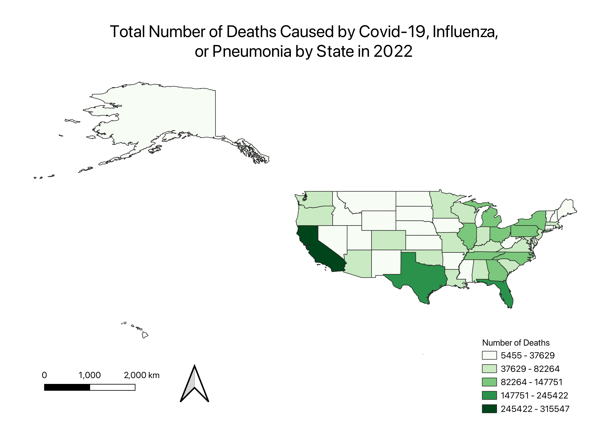

Homework 7

The map above depicts the total deaths caused by Covid-19, influenza, and pneumonia by state during 2022. California had the most deaths with 315,547, and Wyoming had the least with 5,455.
I chose this topic because I thought it'd be an interesting topic to observe since the Census doesn't track it. Despite not being considered a pandemic anymore, Covid's impact on the world, especially the United States, is important and relevant.
We should continue to take care of ourselves and others by testing and quarantining because there are still large amounts of people dying due to Covid and Covid-related illnesses.
Data used for this project:
CSV Source
Cleaned CSV Table
Vector File